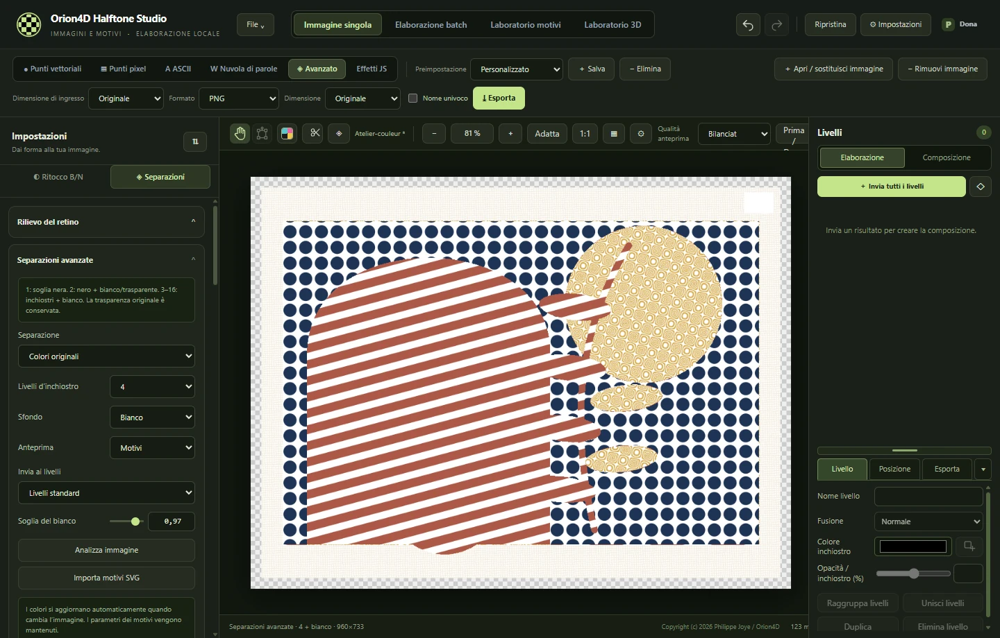

V2.0.0 · WINDOWS X64
Orion4D Halftone Studio
Retini, inchiostri e rilievi
Trasforma le immagini in incisioni, prepara le separazioni di inchiostro o scolpisci i retini in 3D. L’elaborazione delle immagini avviene in locale.

Gli strumenti
Apri il capitolo adatto al tuo progetto, dal primo retino al file finale.
Retini e incisioni
Punti vettoriali e pixel, tratteggi continui e puntinismo adattivo.
Separazioni di inchiostro
CMYK, bicromia, tricromia e fino a otto inchiostri con profili ICC.
Arte ASCII e nuvole di parole
Componi una sagoma SVG o un ritratto con caratteri e parole.
Livelli ed esportazione
Sovrapponi gli inchiostri ed esporta composizioni o pellicole di stampa.
Laboratorio 3D
Scolpisci un retino, prepara una litofania o anima un rilievo.
Effetti JS e MCP locale
Scrivi effetti con controlli regolabili e usa gli strumenti 2D tramite MCP.
Dimensioni di ingresso e di esportazione indipendenti
Elabora l’immagine alla dimensione originale, in percentuale o a dimensione fissa. Scegli separatamente la dimensione di uscita per un’immagine o per un lotto.
Esempi del laboratorio
Esplora gli esempi e scopri le impostazioni usate per crearli.

EFFETTI JS
Tratteggi topografici
I toni dell’immagine deformano le linee. Nelle ombre compare un secondo intreccio.
Crea un effetto con parametri regolabili ↗Confronta sette elaborazioni in bianco e nero ↗

RETINO RÉTRO
Guilloché di sicurezza
Le linee ondulate si incrociano man mano che i toni si scuriscono.
Esplora i motori di retinatura ↗
SEPARAZIONI
Un motivo per ogni inchiostro
Una singola immagine combina retini diversi. In modalità Avanzata puoi regolare il motivo, il colore e la copertura di ogni retino.
Prepara una separazione ↗
NUVOLA DI PAROLE
Una sagoma fatta di parole
La maschera dell’immagine determina la posizione. Dimensioni, rotazione e colori delle parole disegnano la sagoma.
Componi una nuvola di parole ↗
LABORATORIO 3D
Doratura simulata
Nel laboratorio 3D puoi regolare il materiale, l’illuminazione e l’inquadratura del retino.
Illumina un retino in rilievo ↗